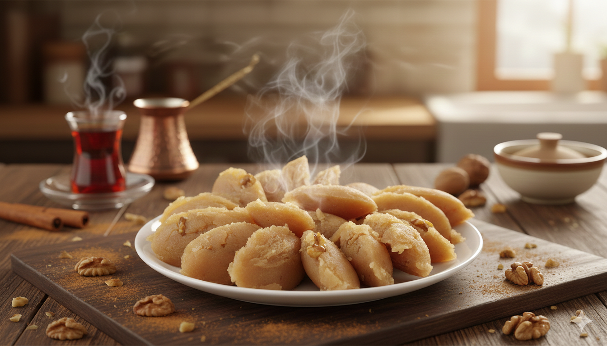

Grip döneminde enerji verecek,
mideyi yormayan ve hazırlaması sabır isteyen
geleneksel bir lezzet.

Ön Bilgi & Süreler
Bu helva anne usulü teknikle kurgulanmıştır.
Grip halindeyken fazla efor sarf etmemek için ateş kontrolü kritiktir.
Hazırlama: 2 Dakika
Pişirme: 15-20 Dakika (Kısık Ateş)
Sonuç: Yaklaşık 2-3 Porsiyon
Malzemeler
Ana Malzemeler
1 su bardağı Un
Yarım su bardağı Sıvı Yağ
1 su bardağı Şeker
1 su bardağı Su (veya Süt)
İsteğe Bağlı Dokunuşlar
Bir tutam Tarçın (Grip için)
Ceviz içi (Kıtır doku için)
Bir parça Tereyağı (Lezzet için)
Hazırlık & Kavurma
1. Bir kapta su ve şekeri, şeker tamamen eriyene kadar karıştırıp kenara al.
2. Geniş bir tencereye yağı al ve unu ekleyerek kısık ateşte kavurmaya başla.
3. Unun rengi sütlü kahveye dönene kadar sabırla, ezerek karıştır.
O Meşhur "Cos" Anı
4. Unun rengi dönünce ocağı en kısığa al. Şekerli suyu dökerken dikkatli ol; yoğun bir buhar ve "cos" sesi çıkacaktır.
5. Şerbeti döker dökmez hızla karıştırarak unun suyu tamamen çekmesini sağla.
6. Helva tencereyi bırakıp toparlandığında ocağı kapat ve dinlenmeye bırak.
• DİKKAT: Mutlaka geniş tencere kullan, buhar elini yakmasın.
• Şerbeti dökerken yüzünü tencereden uzak tut.
• Kapak kapatıp 5 dakika "demlemek" kıvamı güzelleştirir.